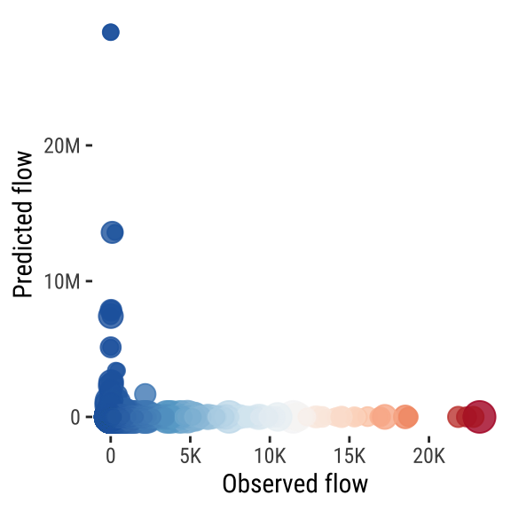
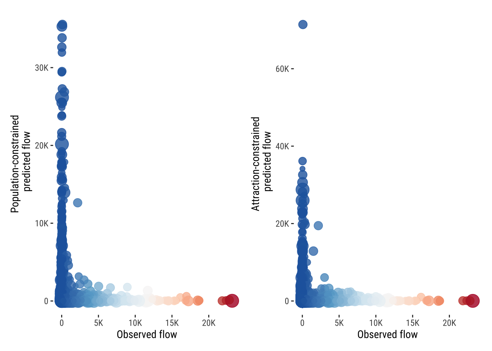

# data management
library(tidyverse)
# spatial data management
library(sf)
# generalised mixed linear modelling
library(glmmTMB)
# data visualisation
library(scales)
library(patchwork)
source("../../code/style/data-visualisation_theme.R")A practical guide to spatial interaction modelling
Abstract
This document is only a demo explaining how to use the template.
Keywords
spatial interaction modelling, gravity modelling, flow data
1 Introduction
Spatial interaction models (SIMs) is a core tool to simulate flows between different locations in physical space. They are a valuable resource through which the geographic structure between locations encoded in aggregate flows of people, information and goods can be represented and understood. Intuitively, SIMs seek to capture the spatial interaction between places as a function of three components: origin attributes, destination attributes and their separation. Inspired by Newtonian concepts developed in physics, spatial flows between locations are conceived as the result of their proportional gravitational force and inverse association with spatial separation. Attributes of origin and destination locations are employed to represent gravitational forces pushing and pulling people, information and goods between specific locations. Various forms of distance and costs are used to represent the deterring effects of geographical separation on spatial flows.
SIMs are widely used for prediction and inference. They are used to make inference about the factors contributing to influence spatial flows. They have been used to understand the magnitude and direction of influence of individual and place-level attributes on geographic flows. Understanding the effect of these factors offers valuable evidence to inform the development of appropriate plans, strategies and interventions (Fotheringham and O’Kelly, 1989). SIMs are also used to make predictions of the size of spatial flows. These predictions are normally used to assess the impact of interventions and creation of “what-if” scenarios, providing guidance for the identification of optimal locations and size for potential new service units [REF]. In this context, SIMs are often used to evaluate the impact of new bus stops, shopping stores, schools or housing units on their potential demand and traffic changes (Fotheringham and O’Kelly, 1989). To these ends, SIMs have been used to address questions in a variety of settings, including retail, migration, transport, trade, commuting, school travel and more broadly urban planning.
Yet, the implementation of SIMs remains a challenge. Algorithms to calibrate the parameters of SIMs have remained locked away, either behind dense algebraic notation in dusty papers from the 1970s, or behind paywalls of commercial software (Rowe et al., 2024). Additionally, Rowe et al. (2024) noted a dearth of knowledge within geographical education as SIMs are not widely taught in undergraduate programmes in the same way as, for instance, regression models are taught in economics or social psychology. This situation is argued to have occurred despite the availability of effective routines to calibrate SIMs via popular linear and general linear modelling frameworks, and as practical expediency is sacrificed at the expense of theoretical or technical prowess (Rowe et al., 2024). The ways in which calibration procedures are presented as lengthy mathematical derivation or passing reference to ordinary least square tend to hamper accessibility for the easy implementation of SIMs.
This computational notebook contributes to redressing these issues. It aims to provide an intuitive, understandable and practical guide to estimate SIMs in a variety of modelling frameworks. It will include the necessary code to calibrate SIMs, using origin-destination travel-to-work data for the United Kingdom in R programming language. The code provided is generisable and can be adapted to different origin-destination flow data and contexts, including migration, student, transport, trade, currency, data transfer, vessel, shipment and freight flows.
The notebook is structured as follows. The next section sets out some fundamental concepts and definitions relating to SIMs. Section 3 identifies the libraries used before Section 4 describes the data. Section 5 illustrates key techniques to visualise complex spatial interaction data, and Section 6 shows and explains how to estimate SIMs using a range of modelling frameworks. It start with traditional mathematical and Ordinary Least Squares (OLS) approaches to more advanced statistical frameworks, such as Generalised Linear Mixed Models (GLMMs) and machine learning algorithms.
2 Context
SIMs take various forms. Newtonian gravity models are probably the most widely known and used form of SIMs. Inspired by Newton’s law of gravity, the basic gravity version of these models assumes that the spatial flows or interactions between an origin (\(i\)) and a destination \(j\) is proportional to their masses (\(M_{i}\) and \(M_{j}\)) and inversely proportional to their separation (\(D_{ij}\)). Locations are expected to interact in a positively reinforcing manner that is multiplicative of their masses, but to diminish with the intervening role of their separation. The parameters \(\mu\) and \(\gamma\) reflect the proportional relationship between the masses and flows. The separation between locations is often represented by a distance decay function and is measured in terms of the distance, cost or time involved in the interaction. Generally, the model includes a constant (\(\kappa\)) ensuring that the expected flows do not exceed their respective observed counts, and a parameter (\(\beta\)) representing the deterring effect of geographical separation. The task is to estimate the parameters \(\kappa\), \(\mu\), \(\gamma\) and \(\beta\). Following Wilson (1971), a gravity model can be expressed as:
\[ T_{ij} = \kappa \frac{M^{\mu}_{i} M^{\gamma}_{j}}{D^{\beta}_{ij} } \tag{1}\]
SIMs have three key inputs: (1) a matrix of flows between a set of origins and destinations; (2) a measure of separation between origins and destinations; and, (3) measures of masses at origin and destination locations. The literature usually considers a family of SIMs taking four forms which refers to various constraints placed on parameters of the model (Wilson, 1971). There is an unconstrained version which offers a measure of spatial separation, assuming that there is no information on the number of flows originating from each origin to each destination. The number of flows is thus estimated via SIMs using surrogate factors, such as population at the origin and destiination. Constrained versions are used to ensure that specific origin or destination observations are met. Three general formulations of constrained models are used: production-constrained, attraction-constrained and doubly-constrained models. Production-constrained versions are used to constrain a model to origin factors so that the predicted flows emanating from individual origins are in proportion to the relative attractiveness of each destination. Attraction-constrained versions do the same but constrain models to destination factors so that the predicted flows terminating at each destination are in proportion to the relative attactiveness at individual origins. Doubly-constrained versions combine these two sets of constraints to ensure predicted flows are equal to observed flows are constrained by both origin and destination factors.
Various modelling frameworks have been used to calibrate the parameters of SIMs. Originally, mathematical formulations were heavily used but these did not offer any ideas of uncertainty about the estimated parameters and were seen as deterministic. To mitigate this, statistical frameworks proliferated. A simple and widely used formulation is a linear model in which geographic flows are logged to meet the normality modelling assumptions, and OLS and maximum likelihood optimisation frameworks are used to estimate the model parameters. However, linear modelling has various constraints and cannot easily incorporate flow counts of zero, right-skewed distributions of flows and non-linear relationships between flows and the set of predictors. As result, more advanced modelling frameworks have been used to fit SIMs, including count data approaches such as Poison and Negative Binomial Models (Rowe et al., 2023), Generalised Linear Mixed Models (Aparicio Castro et al., 2023) and more recently machine learning (Rowe et al., 2022) and deep learning models (Simini et al., 2021). This computational notebook will provide a practical guide on how to implement these models using travel-to-work data for the UK. The next sections will first introduce the computational environment and data used for this purpose.
3 Computation environment
4 Data
We use an origin-destination matrix capturing travel-to-work commuting flows from the 2021 Census for England and Wales. The data provide estimates on usual residents aged 16 years and over and in employment before the Census week at the Lower Tier Local Authority (LTLA) level. The estimates capture the movement of people between their LTLA area of residence and work. The data are available in a long origin-destination pair format. The first seven columns contain the core components of a spatial interaction dataset, including code and names for origin and destination locations, and the population count moving between a origin-destination pair. The remainder of the dataset comprises the origin and destination attributes, including the total population count and population counts by socioeconomic categories. Columns 9 to 19 contain the attributes at origins and columns 20 to 31 contain the attributes at destinations. Looking at the data frame vertically, the first row shown below displays the count of people who reported Hartlepool as their place of residence and work. The third row shows the count of people who were residing in Hartlepool but reported to travel to work in Middlesbrough.
# read data
df <- read_csv("../../data/output/sim_uk-travel-to-work_2021.csv") %>%
# rename variables
rename(
ltla_res_code = "Lower tier local authorities code",
ltla_res_name = "Lower tier local authorities label",
ltla_work_code = "LTLA of workplace code",
ltla_work_name = "LTLA of workplace label",
ltla_work_id_code = "Place of work indicator (4 categories) code",
ltla_work_id_lbl = "Place of work indicator (4 categories) label",
count = "Count"
) %>%
# exclude the following observations:
dplyr::filter(!ltla_work_name %in%
c("Does not apply",
"Workplace is offshore installation",
"Workplace is outside the UK") ) %>%
# exclude the following variables:
select( -c(ltla_work_id_code, ltla_work_id_lbl) ) %>%
# exclude stayers
dplyr::filter(ltla_res_code != ltla_work_code)
head(df, n = 5 ) # A tibble: 5 × 31
ltla_res_code ltla_res_name ltla_work_code ltla_work_name count population_o
<chr> <chr> <chr> <chr> <dbl> <dbl>
1 E06000001 Hartlepool E06000002 Middlesbrough 1500 92338
2 E06000001 Hartlepool E06000003 Redcar and Clev… 671 92338
3 E06000001 Hartlepool E06000004 Stockton-on-Tees 4240 92338
4 E06000001 Hartlepool E06000005 Darlington 398 92338
5 E06000001 Hartlepool E06000007 Warrington 2 92338
# ℹ 25 more variables: higher_managerial_administrative_professional_o <dbl>,
# lower_managerial_administrative_professional_o <dbl>, intermediate_o <dbl>,
# small_employers_own_account_o <dbl>, lower_supervisory_technical_o <dbl>,
# semi_routine_o <dbl>, routine_o <dbl>, never_worked_unemployed_o <dbl>,
# ft_students_o <dbl>, no_qualifications_o <dbl>, level4_o <dbl>,
# population_d <dbl>, higher_managerial_administrative_professional_d <dbl>,
# lower_managerial_administrative_professional_d <dbl>, …5 Visualising spatial interaction data
6 Estimating spatial interaction models
This section focuses on how to calibrate spatial interaction models in the form of gravity models. It starts with the classical mathematical formulation, then moves to basic statistical frameworks and their extensions.
6.1 Mathematical gravity models
6.1.1 Unconstrained model
We start by implementing the mathematical formulation of gravity models using Equation 1. We adopt the standard Newtonian formulation assuming that \(\mu\) and \(\gamma\) equal to 1 and \(\beta\) to -2, and fit an unconstrained model. Recall here that this model assumes that no information on flows is available. We use the population at origin and destination LDAs and distance between LDA centroids in kilometers to define this model. To assess the model’s predictive capacity, we graphically compare predicted flows versus observed flows. We focus on movements between LDAs, removing movements within LDAs with distance zero. A perfect model would product predicted flows displaying a perfect positive linear relationship with the orbserved flows. The figure below shows the unconstrained model results displaying little correspondence between the predicted and observed flows. The model predicts unrealistic flows of over 10 million which exceeds the size of the observed flows. This reflects the unconstrained nature of the model producing predictions based on distance, origin and destination only.
# Unconstrained model
# assuming these parameters
mu <- 1
gamma <- 1
beta <- 2
kappa <- 1
# using equation 1 to estimate unconstrained model
df$predicted_flow <- round( kappa *
(df$population_o^mu * df$population_d^gamma) / (df$distance_km^beta)
)
# predicted versus observed flows
df %>%
# remove predictions
filter( distance_km != 0) %>%
ggplot( aes( x = count, y = predicted_flow)) +
geom_point( alpha = .8, aes(colour = count,
size = abs(population_o / 1e1)) ) +
# change axis label to a shorthand
scale_y_continuous(
labels = label_number(scale_cut = cut_short_scale())
) +
scale_x_continuous(
labels = label_number(scale_cut = cut_short_scale())
) +
# change colour scale
scale_colour_distiller(palette = "RdBu", direction = -1) +
labs(y = "Predicted flow",
x = "Observed flow") +
theme_plot_tufte() +
theme(legend.position = "none",
axis.text.y = element_text(size = 9),
axis.text.x = element_text(size = 9),
axis.title=element_text(size = 11)
)
Note: Colour represents the size of observed counts. Point size represents the size of population at origins.
6.1.2 Constrained models
Production-constrained model
To address these inconsistencies, we turn to constrained models and first focus on the production-constrained model. This model assumes that we observe the total flows from each origin but not those arriving in each destination. So we can use information on the total number of outflows to constrain the model and distribute the total outflows proportionally to the population of destinations, and as before, inversely proportional to distance.
# Production-constrained model
# total outflow from each origin
outflow <- df %>%
group_by(ltla_res_code) %>%
summarize(total_outflow = sum(count)) %>%
ungroup()
# merge outflows with original data
df <- df %>%
left_join(outflow, by = "ltla_res_code")
# compute denominator for each origin
df <- df %>%
group_by(ltla_res_code) %>%
mutate(kappa_production = sum((population_d^gamma) / (distance_km^beta),
na.rm = TRUE)) %>%
ungroup()
# compute predicted flows
df <- df %>% mutate(
production_constrained_flow =
total_outflow * ((population_d^gamma) / (distance_km^beta)) /
kappa_production
)Attraction-constrained model
Alternatively, we could assume we only have data on the total number of flows arriving at each destination but we have no information on the number of flows being generated from each origin. In such situations, we can use an attraction-constrained model as it uses the known information on total inflows for individual destinations and a set of surrogate variables to represent the total number of flows from each origin.
Doubly-constrained model

6.2 Statistical gravity models
6.2.1 Linear regression model
6.2.2 Log-linear regression model
6.2.3 Logistic regression model with aggregated data
6.2.4 Poisson regression model
6.3 Extensions
6.3.1 Including push-pull factors
6.3.2 Negative binomial regression model
6.3.3 Generalised linear mixed gravity models
6.3.4 Machine learning gravity models
7 References
Aparicio Castro, A., A. Wiśniowski, and F. Rowe (2023), “A Bayesian approach to estimate annual bilateral migration flows for South America using census data,” Journal of the Royal Statistical Society Series A: Statistics in Society, 187(2), 410–435.
Fotheringham, A., and M. O’Kelly (eds.) (1989), Spatial interaction models: Formulations and applications, Kluwer Academic Publishers. Dordrechit.
Rowe, F., A. Calafiore, D. Arribas-Bel, K. Samardzhiev, and M. Fleischmann (2023), “Urban exodus? Understanding human mobility in Britain during the COVID-19 pandemic using Meta-Facebook data,” Population, Space and Place, 29(1), e2637.
Rowe, F., R. Lovelace, and A. Dennett (2024), “Spatial interaction modelling: A manifesto,” Edward Elgar Publishing, pp. 177–196.
Rowe, F., M. Mahony, and S. Tao (2022), “Assessing machine learning algorithms for near-real time bus ridership prediction during extreme weather.”
Simini, F., G. Barlacchi, M. Luca, and L. Pappalardo (2021), “A Deep Gravity model for mobility flows generation,” Nature Communications, 12(1).
Wilson, A.G. (1971), “A Family of Spatial Interaction Models, and Associated Developments,” Environment and Planning A: Economy and Space, 3(1), 1–32.